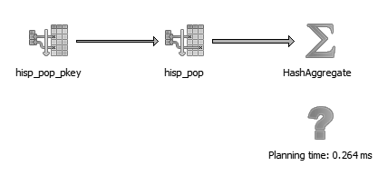
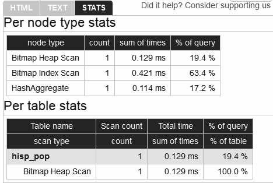
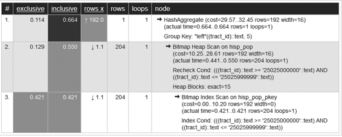

EXPLAIN命令查看语句执行计划要定位语句的性能问题，最简单直接的方法就是使用 EXPLAIN 和 EXPLAIN(ANALYZE) 命令来分析其执行计划。PostgreSQL 从很早的版本开始就已经支持该命令，并且历年来其功能一直在不断地演进，目前已经非常成熟，可以展示出一个语句的执行计划方方面面的细节。在演进过程中，该命令支持的输出格式也越来越丰富。从 9.0 版开始，你甚至可以将输出转储为 XML、JSON 或者 YAML 格式。
对于普通用户来说，该功能最令人激动的一次强化是几年前 pgAdmin 引入的图形化展示执行计划的能力。借助于这种能力，你只需通过仔细观察执行计划图即可了解语句的瓶颈点在哪里，哪些表应该建索引，以及实际的执行路径与预期的执行路径是否一致。
EXPLAIN选项要执行非图形化的 EXPLAIN 分析，只需在 SQL 语句前加上 EXPLAIN 或者 EXPLAIN(ANALYZE)，然后再执行即可。
EXPLAIN 本身的执行效果是输出执行计划而并不执行 SQL 语句本身，加上 ANALYZE 实参之后（就像 EXPLAIN (ANALYZE)）的执行效果是执行该 SQL 语句本身而且会将实际执行情况与执行计划进行对比分析，这可以用来评估执行计划的准确性。
在 EXPLAIN 后增加 VERBOSE 实参将使得输出的执行计划精确到列级别。还有一个必须与 ANALYZE 实参联用的 BUFFERS 实参，其语法为 EXPLAIN(ANALYZE,BUFFERS)，通过它可以显示出执行计划过程中重用缓存数据时的命中次数，这个数字越大就表示本次查询过程中从内存缓存中获取的记录数越多，这些数据是之前的查询执行过程中缓存下来的，缓存中已有的数据块就不需要再从磁盘读取了。
完整的 SQL 语句执行计划解释语法是这样的：EXPLAIN(ANALYZE,VERBOSE,BUFFERS)+ 查询语句，执行后输出的结果包括执行时间、列的输出以及缓存命中次数等。
要想使用图形化 EXPLAIN，当然必须得有比如 pgAdmin 这样的图形化界面工具。通过 pgAdmin 启动图形化 EXPLAIN 之后，请照常编辑查询，而不是执行它，然后从下拉菜单中选择 EXPLAIN 或者 EXPLAIN(ANALYZE)。有人可能对图形化界面操作不屑一顾，认为字符界面对他来说已经足够，那么我们只能说：请多保重。
对于 UPDATE 或者 INSERT 这种 DML 语句来说，如果仅希望查看其执行计划而不希望真正执行，可以把这个语句包装成一个事务块，即语句之前加 BEGIN，之后加 ROLLBACK。
我们找个例子来试验一下。首先使用 EXPLAIN(ANALYZE) 命令，SQL 命令中使用的是前面的示例 4-1 和示例 4-2 中创建的表。
我们想先测试语句不使用索引的情况，因此先将表上的主键删掉。
ALTER TABLE census.hisp_pop DROP CONSTRAINT IF EXISTS hisp_pop_pkey;
这样该表上的语句就不会再使用索引，从示例 9-1 中可以看到此时的执行计划为全表扫描策略。
示例 9-1：使用
EXPLAIN (ANALYZE)查看全表扫描的执行计划
EXPLAIN (ANALYZE) SELECT tract_id, hispanic_or_latino
FROM census.hisp_pop
WHERE tract_id = '25025010103';
示例 9-2 是示例 9-1 的执行输出结果。
示例 9-2：
EXPLAIN(ANALYZE)的执行结果
Seq Scan on hisp_pop
(cost=0.00..33.48 rows=1 width=16)
(actual time=0.205..0.339 rows=1 loops=1)
Filter: ((tract_id)::text = '25025010103'::text)
Rows Removed by Filter: 1477
Total runtime: 0.360 ms
几乎所有的执行计划都会包含多个步骤，每一步骤又可能会有若干子步骤。每一步骤会有一个估算的执行时间范围，看起来像这样：cost=0.00..33.48，如示例 9-2 所示。其中第一个数字 0.00 是估算的该步骤起始执行时间，第二个数字 33.84 是估算的该步骤总执行时间。起始执行时间点之前会执行一些后续计算的准备动作，而读取数据、索引扫描、多表数据关联整合等动作都是在起始执行时间点之后发生的。如果执行方式为全表扫描，那么其起始执行时间点为 0，因为这种场景下规划器只是简单地立即开始扫描全表数据，没有什么预备动作。
请注意，估算的执行时间（cost）的单位并不是真实的时间单位，而是取决于硬件环境以及规划器的执行时间单位常数（seq_page_cost 和 cpu_tuple_cost）。因此，cost 值仅具有相对意义，可用于比较同一台物理服务器上多个执行计划之间的效率。规划器的任务就是要选择出总体 cost 值最低的一个执行计划。
因为我们选择了在示例 9-1 中包含 ANALYZE 实参，因此规划器将运行查询，所以我们可以查看到真正的执行时间统计。
通过示例 9-2 中的执行计划可以看到规划器选择了全表扫描策略，因为没有任何索引可用。下面输出的 Rows Removed by Filter:1477 是扫描过程中排除掉的不符合条件的记录数。
在 PostgreSQL 9.4 版中，EXPLAIN 输出的执行计划中区分了分析执行计划的时间和真正的执行时间，并将二者分开单列。执行计划分析时间就是规划器分析出最终执行计划所消耗的时间；执行时间是按照执行计划执行并得到最终结果所用的时间。9.4 版的输出如示例 9-3。
示例 9-3：9.4 版中
EXPLAIN(ANALYZE)命令的输出结果
Seq Scan on hisp_pop
(cost=0.00..33.48 rows=1 width=16) (actual time=0.213..0.346 rows=1 loops=1)
Filter: ((tract_id)::text = '25025010103'::text)
Rows Removed by Filter: 1477
Planning time: 0.095 ms
Execution time: 0.381 ms
我们把主键重新建起来：
ALTER TABLE census.hisp_pop ADD CONSTRAINT hisp_pop_pkey PRIMARY KEY(tract_id);
再次执行示例 9-1 的语句，得到的输出如示例 9-4 所示（基于 PostgreSQL 9.4 版执行）。
示例 9-4：利用了索引的执行计划
Index Scan using idx_hisp_pop_tract_id_pat on hisp_pop
(cost=0.28..8.29 rows=1 width=16) (actual time=0.018..0.019 rows=1 loops=1)
Index Cond: ((tract_id)::text = '25025010103'::text)
Planning time: 0.110 ms
Execution time: 0.046 ms
此场景下规划器判定使用索引会比全表扫描效率更高，因此在执行计划中使用了索引扫描策略。估算的执行时间从 33.48 降为 8.29。起始执行时间点也不再是 0，因为规划器需要先扫描索引，然后才能把命中的记录从磁盘取出来（如果所需数据已经存在于内存缓存中，也有可能是直接从内存取）。你也可以看到规划器不再需要扫描 1477 条记录，这极大地降低了执行成本。
对于如示例 9-5 所示的更复杂的查询，其执行计划中会包含更多的子步骤。最终执行的步骤显示时总是排在最前，其中记录的估算时间和真实时间就是其所有子步骤相应项目之和。子步骤在显示时是按照其层级向右逐级缩进的。
示例 9-5：带
GROUP BY和SUM的语句的执行计划
EXPLAIN (ANALYZE)
SELECT left(tract_id,5) AS county_code, SUM(white_alone) As w
FROM census.hisp_pop
WHERE tract_id BETWEEN '25025000000' AND '25025999999'
GROUP BY county_code;
示例 9-6 中记录的是示例 9-5 中语句的执行计划，其中包含分组和求和操作。
示例 9-6：包含哈希聚合策略的执行计划
HashAggregate
(cost=29.57..32.45 rows=192 width=16) (actual time=0.664..0.664 rows=1 loops=1)
Group Key: "left"((tract_id)::text, 5)
-> Bitmap Heap Scan on hisp_pop
(cost=10.25..28.61 rows=192 width=16) (actual time=0.441..0.550 rows=204 loops=1)
Recheck Cond:
(((tract_id)::text >= '25025000000'::text) AND
((tract_id)::text <= '25025999999'::text))
Heap Blocks: exact=15
-> Bitmap Index Scan on hisp_pop_pkey
(cost=0.00..10.20 rows=192 width=0) (actual time=0.421..0.421 rows=204 loops=1)
Index Cond:
(((tract_id)::text >= '25025000000'::text) AND
((tract_id)::text <= '25025999999'::text))
Planning time: 4.835 ms
Execution time: 0.732 ms
示例 9-6 中所示执行计划的顶层步骤是一个哈希聚合操作。该操作包含一个位图表扫描子节点，该位图表扫描子节点又包含了若干位图索引扫描子节点。在本例中，因为我们是第一次执行此语句，所以执行计划分析时间远远超过了真正的执行时间。但 PostgreSQL 有执行计划缓存功能，所以如果我们再次执行此语句，或者执行一个可以共享缓存下来的执行计划的类似语句，那么执行计划的分析时间就会大大减少。
如果你觉得阅读纯文字形式的执行计划是一件痛苦的事，那么图 9-1 中演示的图形化执行 计划会解除你的烦恼。

图 9-1：图形化展示执行计划
你只需将鼠标放到图标上就能看到每个步骤的详细信息。在结束本节之前，我们要向你介绍一个表格形式的执行计划展示工具（http://explain.depesz.com/），该工具由 Hubert Lubaczewski 创建，在此我们向他表示感谢。打开工具地址，然后将文本格式的执行计划复制过去，就可以得到一个格式化得非常漂亮的表格，如图 9-2 所示。

图 9-2：在线执行计划分析工具
在输出的 HTML 表格中，你可以看到经过格式重排的带颜色分区的执行计划表，其中会以显眼的颜色高亮显示有问题的部分，如图 9-3 所示。表格中的 exclusive 列表示当前步骤的操作所耗时间，inclusive 列表示当前步骤及其所有子步骤的操作所耗时间。

图 9-3：表格式的执行计划分析结果
尽管图 9-3 中 HTML 表格形式的执行计划提供的信息与纯文本形式的执行计划其实是一模一样的，但使用“彩色编码”和“分步骤操作时间统计”这两个功能，用户可以更轻松地找出实际执行耗时与预估耗时之间的偏差。黄色、褐色以及红色的格子是需要特别注意的。
Rows x 这一栏表示预估查询出的记录数，rows 栏显示的是实际查出的记录数。上表中显示的就是预估能返回 192 行记录，但实际仅返回 1 条。下面的索引扫描步骤总共命中了 204 条记录，但其中的 203 条其实是不符合条件的伪命中，这些记录在最后的哈希聚合步骤中复查时被揪出来了。估算的记录数不准一般是因为表的统计信息未及时更新所导致。在针对某表执行耗时较长的语句之前先对其进行一下分析是很有必要的。